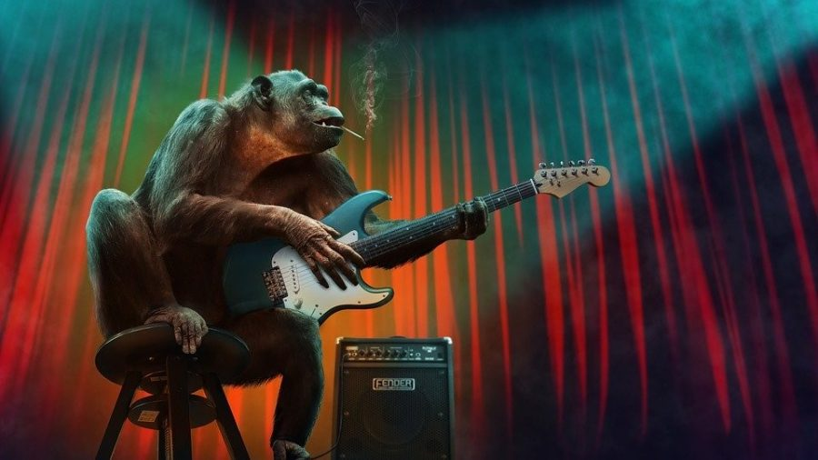

Artigo extra
Além de desenvolvedor, também sou guitarrista!
Você sabe qual é a guitarra mais cara do mundo ?
A guitarra é um dos instrumentos musicais preferidos no mundo inteiro, principalmente para os apaixonados por rock. Os músicos mais famosos sonham com a melhor guitarra, mas também prezam por ter uma coleção em casa. Mas, você sabe qual é a guitarra mais cara do mundo?
Nesse texto, você vai conhecer o top 10 e descobrir qual é a guitarra mais cara do mundo. A lista foi feita com base na pesquisa do site top10mais.org.
Pronto para atualizar a sua lista de instrumentos dos sonhos com a guitarra mais cara do mundo? Então, vamos lá!